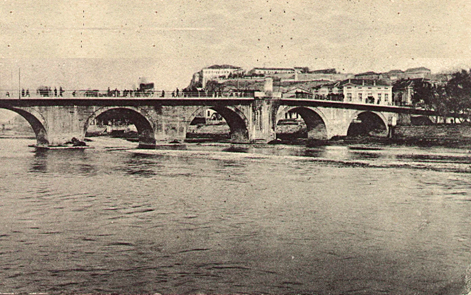
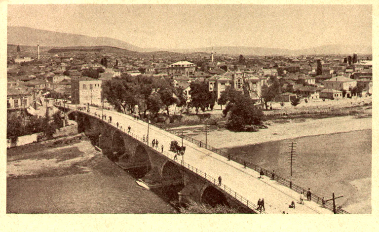
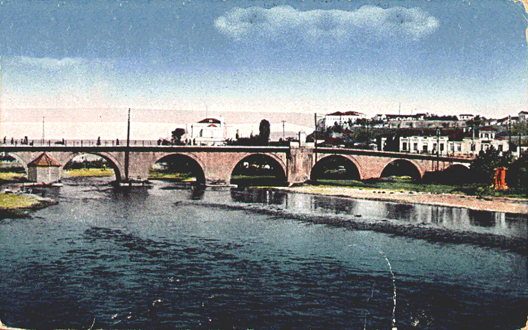

Shkupi 1916 - 1917 ura
Dokumente nga Luftërat Ballkanike
- Viti
- 1916-1917
- Kohëzgjatja
- 00:13

Në qendër të qytetit, mbi Vardar, është ndërtuar një urë monumentale prej guri (e quajtur popullorisht Ura e Gurit). Sipas disa burimeve turke ura u ndërtua në gjysmën e dytë të shekullit XV, në kohën e sulltan Mehmetit II. Sipas hulumtimeve më të reja, nga rindërtimi i urës më 1990, supozohet se ura u ndërtua në kohën e Justinianit I në shekullin VI. Është ndërtuar me blloqe guri të punuara mirë, ndërsa konstruksioni i saj mbështetet në shtylla të fuqishme, të lidhura me harqe gjysmërrethore - 13 gjithsej. Më 1905 u ndërtuan shtigje prej betoni, që më parë ishin mbuluar me dërrasa. Më 1937 u zgjerua me konzola, ku u zhvendosën shtigjet e këmbësorëve. Në fotografi është Shkupi - fundi i shekullit XIX: Ura e Gurit dhe rrapi i vjetër. Lart djathtas është Kalaja e Shkupit me kazermën.

Ura e Gurit - fundi i shekullit XIX. Në sfond majtas duket Xhamia Burmali.

Ura e Gurit - fundi i shekullit XIX. Në sfond majtas duket Xhamia Burmali.

Shkupi në fund të shekullit XIX dhe fillim të shekullit XX (verë) - pamje e Urës së Gurit. Në plan të parë është një shtyllë telefoni me kuti postare, e pranë saj një fener, forma e parë e pajisjeve komunale të qytetit. Meqë është verë, këmbësorët mbrohen nga dielli me çadra. Për bartjen e mallrave përdoreshin qerre me qe, ndërsa karrocat me kuaj shërbenin si transport publik. Pranë urës djathtas duket një rrotë e madhe mulliri.

Shkupi nga fundi i shekullit XIX dhe fillimi i shekullit XX (dimër) - pamje e Urës së Gurit. Në plan të parë është një shtyllë telefoni me kuti postare, e pranë tyre një fener, forma e parë e pajisjeve komunale të qytetit. Vërehen rrugë të pashtruara e me baltë. Në sfond janë lagjja hebreje dhe Kalaja e Shkupit.

Panoramë e Urës së Gurit në fillim të shekullit XX.

Ura e Gurit - rreth vitit 1905. Në sfond, lart majtas, duket Kalaja e Shkupit me kazermat. Djathtas është rrapi i vjetër.

Ura e Gurit në fund të shekullit XIX dhe fillim të shekullit XX. Lart djathtas është Kalaja e Shkupit.

Shkupi në periudhën turke - fillimi i shekullit XX. Fotografia tregon se njëra gjysmë e Urës së Gurit ka parmak guri, ndërsa tjetra një parmak të përkohshëm hekuri e druri; më 1905 filloi zëvendësimi i parmakut të gurit me një hekuri. Në këndin e majtë, pas Urës së Gurit, duket teatri turk. Pranë urës djathtas duket një rrotë e madhe mulliri. Djathtas është rrapi i vjetër në të cilin u var trupi i vdekur i Karposhit, menjëherë pas shtypjes së Kryengritjes së Karposhit - 1689. Në sfond duket e tëra Kalaja e Shkupit me shtëpitë e lagjes hebreje. Interesante janë edhe gratë që zbardhin pëlhura në ujërat e pastra të Vardarit, në plan të parë të fotografisë.

Një grup turqish në Urën e Gurit - fillimi i shekullit XX. Vlen të vihet re se trotuaret e urës janë mbuluar me dërrasa.

Ura hekurudhore mbi Vardar në Shkup - fundi i shekullit XIX.

Urë guri mbi lumin Pçinja - rrethina e Shkupit (sot nuk ekziston). Sipas njeriut që qëndron në majë të urës, lartësia e saj ishte rreth 15 metra mbi ujë. (vitet 1910)

Shkupi më 1902. Fotografia tregon urën prej druri, dhe pas saj kafenenë e vjetër "Boges", ku mbaheshin shfaqjet e para teatrore. Mbi të është Kalaja e Shkupit me kazermën ushtarake.

Ura e Gurit - 1905. Majtas, pas saj, duket teatri turk, ndërsa në pjesën e sipërme Kalaja e Shkupit.

Pamje drejt bregut të djathtë të Vardarit përmes degëve të rrapit të vjetër - rreth vitit 1910: një pjesë e Urës së Gurit, Xhamia Burmali dhe dyqanet para saj.

Shkupi para vitit 1912. Ura e Gurit me konzola dhe parmak hekuri. Djathtas është rrapi i vjetër, dhe lart duket Kalaja e Shkupit.

Shkupi gjatë Luftës Ballkanike. Në sfond Xhamia Burmali.

Pamje e një pjese të Urës së Gurit drejt Kalasë së Shkupit (rreth vitit 1910)

Pamje e një pjese të Urës së Gurit, me teatrin turk në sfond majtas. Mbi të ngrihet Kalaja e Shkupit. (rreth vitit 1910)

Ura e Gurit me një grup njerëzish mbi të - rreth vitit 1913

Ura e Gurit mbi Vardar në Shkup - rreth vitit 1913

Ura e Gurit mbi Vardar në Shkup - rreth vitit 1913. Në sfond, lart djathtas, duket Kalaja e Shkupit.

Shkupi më 1912 - pikturë. Ura e Gurit dhe Xhamia Burmali, me një brez të mrekullueshëm të gjelbër plepash prapa. Vërehet ndërfutja e arkitekturës klasike, dhe kejet e reja janë element i ri urban. Grupet e ndërtesave të banimit, tregtare e zejtare para urës janë pjesë e kompozimit, me tipare tradicionale dhe elemente të ndikimit evropian.

Ura e hekurt mbi Vardar në Shkup me pamje drejt shkollës së vjetër, Shën Minës dhe Shën Mërisë - rreth vitit 1920.

Ura e hekurt, ndërtuar më 1905. Në sfond është ndërtesa e Universitetit të parë të Shkupit. (1915)

Ura e hekurt, ndërtuar më 1905. Në sfond është ndërtesa e Universitetit të parë të Shkupit. (vitet 1920.)

Ura e hekurt mbi Vardar në Shkup, ndërtuar më 1905. Në sfond është ndërtesa e Universitetit të parë të Shkupit. (vitet 1920)

Ura e hekurt, ndërtuar më 1905. (vitet 1920)

Ura e hekurt mbi Vardar në Shkup me pamje të ndërtesave në kejin "Dimitar Vlahov". (vitet 1920)

Shkupi, rreth vitit 1920. Pjesë e sheshit të qytetit para Urës së Gurit. Kioskat e para për shërbim e shitje kalimtarësh, me detaje arkitektonike të theksuara, sidomos në formën e çative. Ura është zgjeruar me konzola për këmbësorët. Lart në sfond duket Kalaja e Shkupit.

Shkupi, rreth vitit 1920. Pjesë e sheshit të qytetit para Urës së Gurit. Para dhe mbi Urën e Gurit vërehen ndërtime të vogla për njoftimin e qytetarëve me afishe. Ura është zgjeruar me konzola për këmbësorët. Në sfond, lart majtas, duket Kalaja e Shkupit.

Ura e Gurit me një grup njerëzish që shohin nivelin e rritur të ujit të Vardarit. (vitet 1920)

Ura e Gurit - 1920. Në sfond duket Banka Osmane.

Pamje e Urës së Gurit drejt Qytetit të Vjetër dhe lagjes Pajko, me ambulancën e dentistit Dr. Ruben dhe Bankën Osmane - rreth vitit 1927.

Pamje e Urës së Gurit drejt Qytetit të Vjetër, çarshisë dhe kodrës Gazi Baba. Pranë urës, djathtas, ishte ambulanca e dentistit Dr. Ruben, e pak më djathtas Banka Osmane. Midis tyre ishte një shesh i vogël me stacion karrocash me kuaj, dhe në mes të tij monumenti i të rënëve në Luftën Ballkanike - rreth vitit 1927.

Pamje e Urës së Gurit drejt Qytetit të Vjetër, çarshisë dhe kodrës Gazi Baba. Pranë urës, djathtas, ishte ambulanca e dentistit Dr. Ruben, e pak më djathtas Banka Osmane. Midis tyre ishte një shesh i vogël me stacion karrocash me kuaj, dhe në mes të tij monumenti i luftëtarëve të rënë - rreth vitit 1927.

Pamje e Urës së Gurit drejt Qytetit të Vjetër dhe lagjes Pajko, me ambulancën e dentistit Dr. Ruben dhe Bankën Osmane - rreth vitit 1927.

Pamje drejt bregut të djathtë të Vardarit me një pjesë të urës dhe Shtëpinë e Oficerëve - vitet 1930. Majtas duket mbetja e rrapit të vjetër të prerë, në të cilin u var trupi i vdekur i Karposhit më 1689, pas shtypjes së kryengritjes.

Pamje e një pjese të Urës së Gurit, rrapit të vjetër dhe Kalasë së Shkupit - rreth vitit 1920.

Shkupi, rreth vitit 1920. Ura e Gurit me Kalanë e Shkupit në sfond. Në plan të parë zbardhen pëlhura në ujin e pastër të Vardarit.

Pamje e urës së vogël prej druri dhe e kejit në bregun e djathtë të Vardarit. Ndërtesat kanë detaje neoklasike dhe baroke. Rruga është "Ilindenska" e sotme. Ndër ndërtesat është edhe Shkolla e Mesme e Muzikës. Në plan të parë është ura e vogël prej druri që të çonte te Teatri Kombëtar.

Ura e vogël prej druri mbi Vardar, me Shtëpinë e Oficerëve në sfond. Pranë saj janë banka dhe posta e vjetër - fundi i viteve 1920.

Pamje e urës së vogël prej druri mbi Vardar, me Shtëpinë e Oficerëve, postën e vjetër dhe bankën në sfond - rreth vitit 1930.

Pamje drejt Kalasë së Shkupit me kazermën. Poshtë saj ndodhet lagjja hebreje. Në plan të parë është ura e vogël prej druri - vitet 1950.

Pamje drejt Teatrit Kombëtar dhe urës së vogël prej druri - vitet 1930.

Ura e Gurit - vitet 1930. Teatri Kombëtar në sfond, dhe mbi të Kalaja e Shkupit.

Pamje e një pjese të sheshit dhe e Urës së Gurit. Në sfond majtas duken Teatri Kombëtar dhe Kalaja e Shkupit. Vihet re karroca me kuaj si mjeti kryesor i transportit të qytetarëve. Në plan të parë ndërtesa të shembura për ndërtimin e Bankës Kombëtare - rreth vitit 1930.

Ujë i rritur i Vardarit. Ura është gjysmë nën ujë. Fotografia është bërë nga bregu i djathtë drejt atij të majtë - vitet 1930.

Rindërtimi dhe ndërrimi i kalldrëmit të Urës së Gurit. Pamje e Pallatit të Ristićit dhe kioskave të para - rreth viteve 1930.

Pamje nga Ura e Gurit drejt sheshit. Majtas po pastrohet vendi për ndërtimin e Bankës Kombëtare - vitet 1930.

Pamje nga bregu i majtë i Vardarit drejt Urës së Gurit dhe Shtëpisë së Oficerëve - vitet 1930.

Ura e Gurit mbi Vardar - rreth vitit 1930. Në sfond duket Teatri Kombëtar, dhe lart djathtas Kalaja e Shkupit.

Ura e Gurit - vitet 1950.

Pjesë e Urës së Gurit. Në sfond duket hoteli "Grand". - vitet 1960

Ura e Gurit me Kalanë e Shkupit në vitet 1960, para rregullimit të kejit.

Pamje e Urës së Gurit dhe Kalasë së Shkupit. (vitet 1970)

Ura e Gurit në vitet 1970 me hapësirën e mesme të kejit.

Ura e Gurit dhe sheshi në vitet 1970.

Pamje nga bregu i djathtë drejt bregut të majtë të Vardarit, e Urës së Gurit, një pjese të sheshit dhe postës së re në sfond. (vitet 1970)

Ura e sotme "Goce Delčev", fotografuar nga Kalaja e Shkupit. (vitet 1990)

Dokumente nga Luftërat Ballkanike
 Ujësjellësi4 kartolina
Ujësjellësi4 kartolina Kalaja30 kartolina
Kalaja30 kartolina Urat60 kartolina
Urat60 kartolina Kej58 kartolina
Kej58 kartolina Sheshi46 kartolina
Sheshi46 kartolina Ndërtesat66 kartolina
Ndërtesat66 kartolina Kishat e krishtera19 kartolina
Kishat e krishtera19 kartolina Objektet myslimane33 kartolina
Objektet myslimane33 kartolina Shtëpia e Oficerëve29 kartolina
Shtëpia e Oficerëve29 kartolina Teatri28 kartolina
Teatri28 kartolina Stacioni hekurudhor13 kartolina
Stacioni hekurudhor13 kartolina Shkollat36 kartolina
Shkollat36 kartolina Parqet12 kartolina
Parqet12 kartolina Tregjet18 kartolina
Tregjet18 kartolina Rrugët38 kartolina
Rrugët38 kartolina Panorama I60 kartolina
Panorama I60 kartolina Panorama II30 kartolina
Panorama II30 kartolina Kolazhe55 kartolina
Kolazhe55 kartolina Përmbytjet9 kartolina
Përmbytjet9 kartolina Tërmeti27 kartolina
Tërmeti27 kartolina Shkupi 200026 kartolina
Shkupi 200026 kartolina